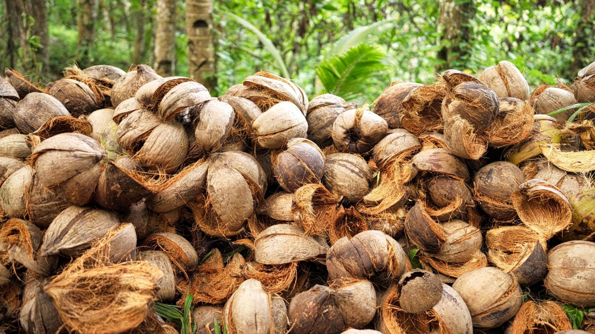

Growing a Greener Future
Coconut products
We have coconut products, like Coconut fibre, copra and coconuts, for industry, processors and retail.
- AddressPollachi, Tamil Nadu, India
- Phone and WhatsApp+91 80724 38128
- Emailinfo@origencoco.com
Growing a Greener Future
We have coconut products, like Coconut fibre, copra and coconuts, for industry, processors and retail.
Who we are
Origen Coco supplies a comprehensive range of coconut-based products to growers, importers, distributors and industrial buyers. Backed by approximately 10 years of experience supplying the Indian market, we combine farmer-direct sourcing, careful product preparation and a customer-focused approach to serving domestic and international markets.
We understand that successful supply partnerships depend on more than the product itself. Consistent specifications, competitive commercial terms, clear communication and dependable shipment planning are central to the way we aim to do business.
01 · Coconut products
Strong, natural fibre from the husk for industrial use.
Coconut fibre is the long, strong strand found inside the husk. It is tough, resistant to wear and fully natural. We take the same husk that gives us coco peat, separate the fibre from the pith, clean it, and press it into bales that are simple to handle and ship.
Mats, rope and brushes · Erosion-control nets and garden products · Upholstery and stuffing
| Item | Details |
|---|---|
| Grades | To be confirmed |
| Packing | To be confirmed |
| Container loading | To be confirmed |
| Parameter | Value |
|---|---|
| Fibre length | To be confirmed |
| Moisture content | To be confirmed |
| Impurities | To be confirmed |
02 · Coconut products
Dried coconut kernel, sorted and packed for processing.
Copra is the dried kernel of the coconut and the main raw material for coconut oil. Its quality depends on the coconuts and proper drying of copra, which we closely monitor.
Coconut oil production · Ingredient for coconut-based food and cosmetic products · Other processing uses
| Item | Details |
|---|---|
| Grades | To be confirmed |
| Packing | To be confirmed |
| Container loading | To be confirmed |
| Parameter | Value |
|---|---|
| Moisture content | To be confirmed |
| Oil content | To be confirmed |
| Free fatty acid | To be confirmed |
| Impurities | To be confirmed |

03 · Coconut products
Mature coconuts from local farms, graded and packed for shipping.
Our coconuts are mature nuts from local farms, bought directly from the growers. At our unit, we grade them by size and quality so that each lot is even and easy to sell, which matters to buyers because it affects pricing, processing, and presentation. We pack the nuts to travel well over long distances.
Wholesale and retail · Food processing · Home and restaurant cooking · Religious and cultural use
| Item | Details |
|---|---|
| Types | To be confirmed |
| Sizes | To be confirmed |
| Packing | To be confirmed |
| Container loading | To be confirmed |
| Parameter | Value |
|---|---|
| Size grading | To be confirmed |
| Average weight | To be confirmed |
| Shelf life | To be confirmed |
Whether you are sourcing coconut-based growing media, raw materials or bulk coconut products, our team is ready to discuss your specifications, volumes, packaging and destination requirements. Contact us for product information and a tailored quotation.
Share your specifications, volume and destination for a tailored supply proposal.
© 2026 Origen Coco
